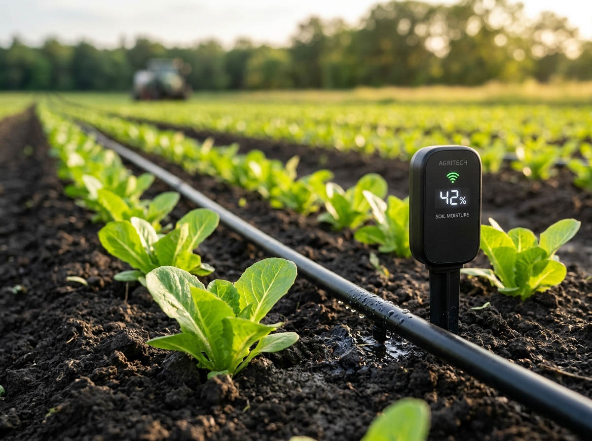
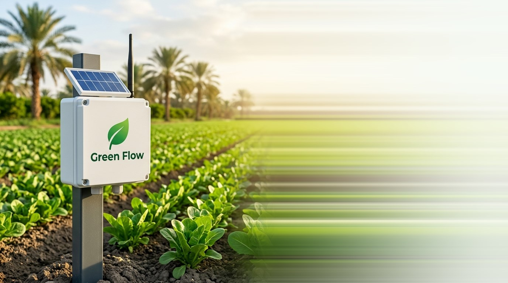
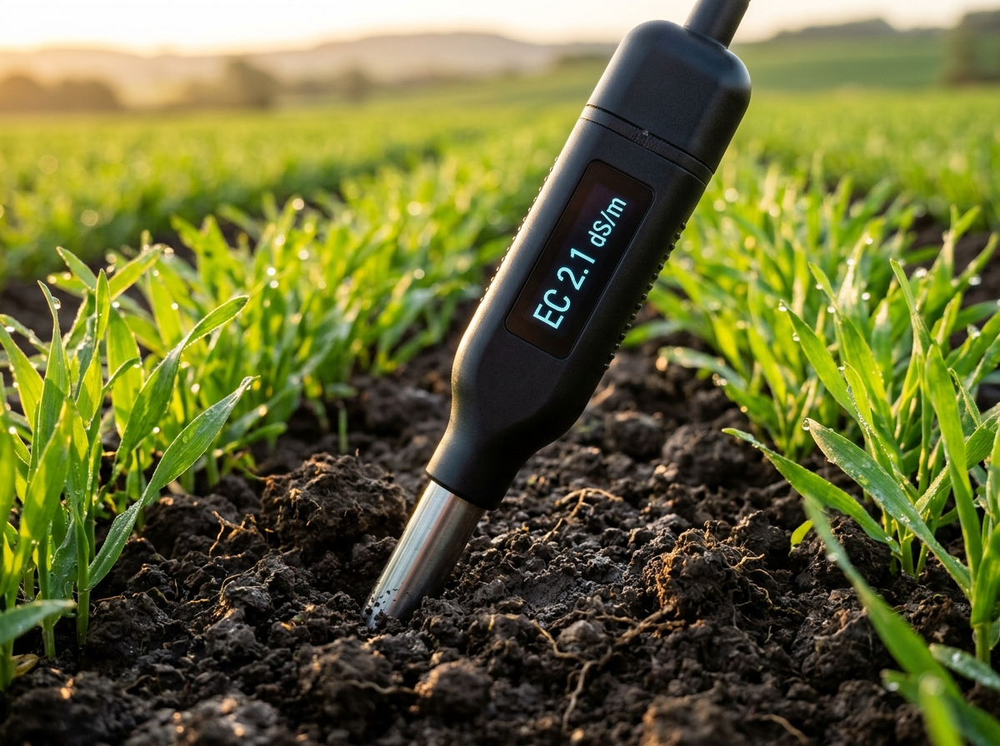

بتستهلك مياه كتير؟

نوفر نظام ري ذكي يحدد احتياج الأرض للمياه ويقلل الهدر.

بنحدد احتياجات مزرعتك ونوفر لك الحل المناسب: مراقبة ملوحة التربة، معالجة ملوحة مياه الري، ونظام ري ذكي يوفر المياه ويقلل الهدر.

نوفر نظام ري ذكي يحدد احتياج الأرض للمياه ويقلل الهدر.
نحلل ملوحة المياه ونوفر نظام المعالجة المناسب حسب النتيجة.

نركب حساسات تقيس ملوحة التربة وتتابع حالتها باستمرار.
Green Flow هو حل تقني زراعي متكامل يعتمد على إنترنت الأشياء (IoT) لربط حساسات التربة والمياه، أنظمة الري الذكية ووحدات معالجة الملوحة، مع تطبيق هاتف ذكي يمنح المزارعين رؤية لحظية ودقيقة لحالة مزارعهم لاتخاذ قرارات ري وتسميد أفضل.
حساسات ميدانية تعمل بالطاقة الشمسية لمتابعة ملوحة التربة (EC) ورطوبتها وجودة مياه الري على مدار الساعة.
تشخيص فوري لمشاكل المياه والتربة مع تشغيل محابس الري الذكي وفق احتياج المحصول الفعلي.
لوحة تحكم عربية واضحة على هاتفك تعرض القراءات والتقارير والتنبيهات الفورية في أي وقت.
تابع مزرعتك وتحكم في نظامك الذكي من موبايلك. راقب قراءات التربة والمياه، استقبل التنبيهات الفورية، وأدر جداول الري بضغطة زر.
أدخل بيانات مزرعتك وسيتواصل معك مهندسو Green Flow لتحديد النظام الأنسب لأرضك ومياهك.